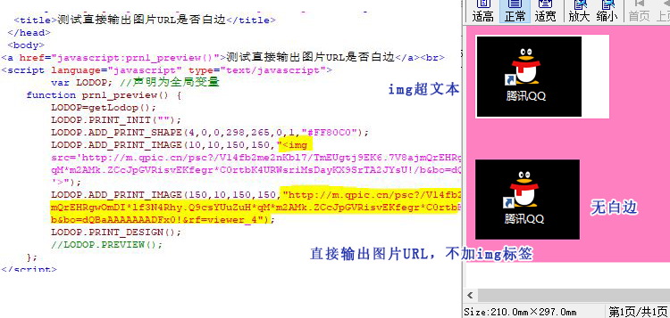

ADD_PRINT_IMAGE直接输出图片URL方式
c-lodop4.0.8.8及之后的版本增加了新的功能，ADD_PRINT_IMAGE可以直接输出图片的URL了。
此文作为之前博文：Lodop图片输出ADD_PRINT_IMAGE 有白边，的补充
之前的博文因为是几年前的版本，之前从新浪博文里搬来的，没有用cnblog里带的代码框，所以无法复制之前博文的代码，此文直接测试URL这个，测试直接输出URL方式是否可以去掉白边，并加一个原来博文里测试过的img标签的作为对比。
之前的博文也介绍了，直接输出base64也可以去掉白边。
---简短问答-----
ADD_PRINT_IMAGE直接输出URL方式测试下，不加img标签。
例如：
LODOP.ADD_PRINT_IMAGE(0,0,"210mm","296.99mm","http://www.c-lodop.com/demolist/PrintSample8.jpg");
或参考样例38，直接输出base64码，不加img标签
----简短问答结束-----
测试代码：
<script language="javascript" src="LodopFuncs.js"></script> <title>测试直接输出图片URL是否白边</title> </head> <body> <a href="javascript:prn1_preview()">测试直接输出图片URL是否白边</a><br> <script language="javascript" type="text/javascript"> var LODOP; //声明为全局变量 function prn1_preview() { LODOP=getLodop(); LODOP.PRINT_INIT(""); LODOP.ADD_PRINT_SHAPE(4,0,0,298,265,0,1,"#FF80C0"); LODOP.ADD_PRINT_IMAGE(10,10,150,150,"<img src='http://m.qpic.cn/psc?/V14fb2me2nKbl7/TmEUgtj9EK6.7V8ajmQrEHRgwOmDI*lf3N4Rhy.Q9csYUuZuH*qM*m2AMk.ZCcJpGVRisvEKfegr*C0rtbK4URWsriMsDayKX9SrTA2JYsU!/b&bo=dQBaAAAAAAADFx0!&rf=viewer_4'>"); LODOP.ADD_PRINT_IMAGE(150,10,150,150,"http://m.qpic.cn/psc?/V14fb2me2nKbl7/TmEUgtj9EK6.7V8ajmQrEHRgwOmDI*lf3N4Rhy.Q9csYUuZuH*qM*m2AMk.ZCcJpGVRisvEKfegr*C0rtbK4URWsriMsDayKX9SrTA2JYsU!/b&bo=dQBaAAAAAAADFx0!&rf=viewer_4"); LODOP.PRINT_DESIGN(); //LODOP.PREVIEW(); }; </script> </body>
图示：
